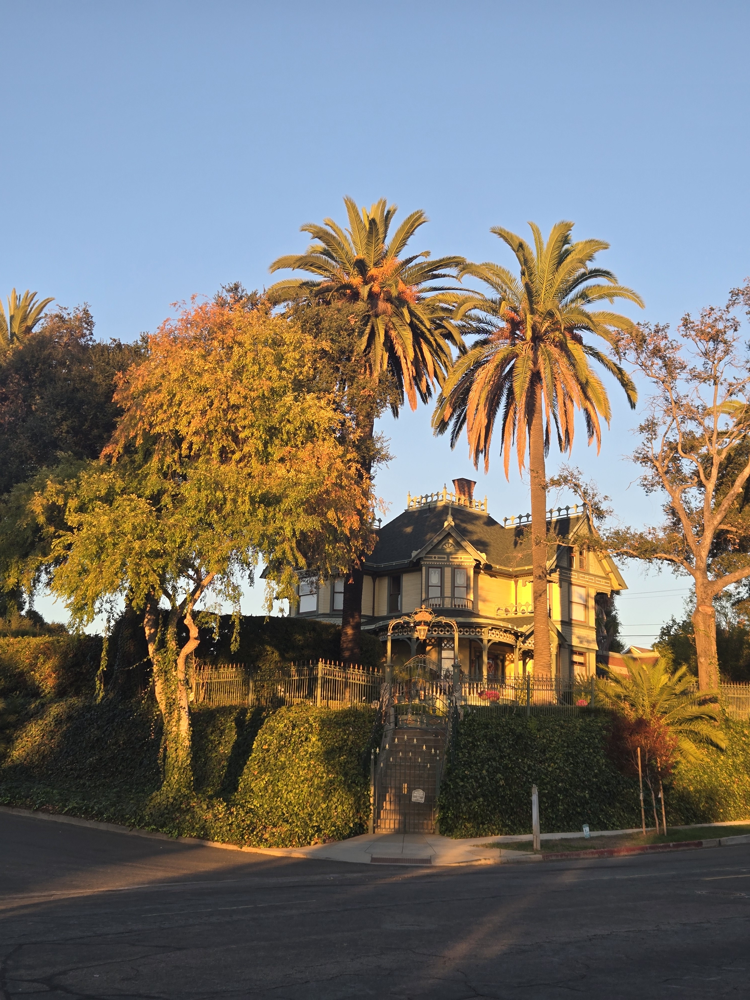
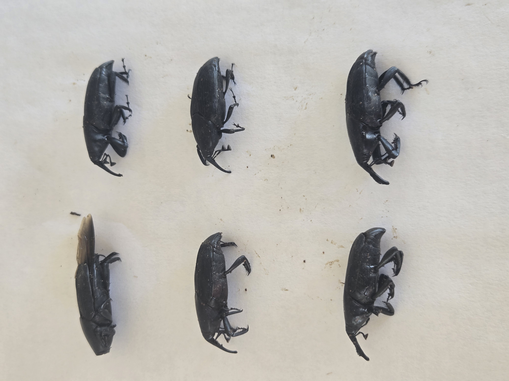
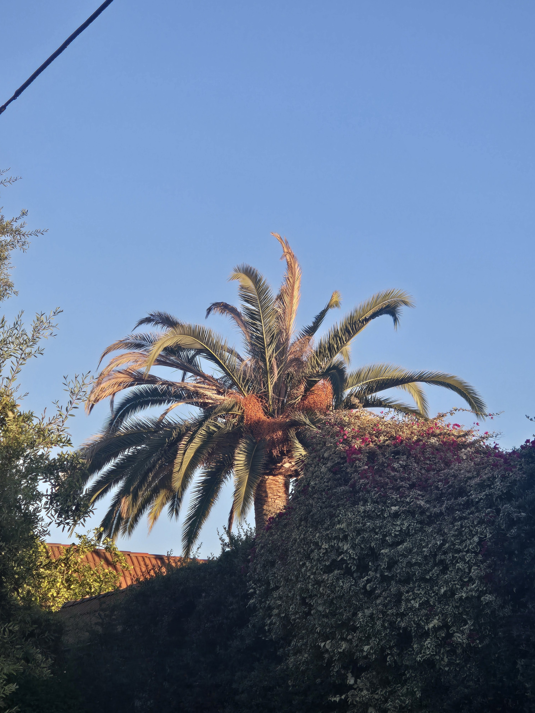
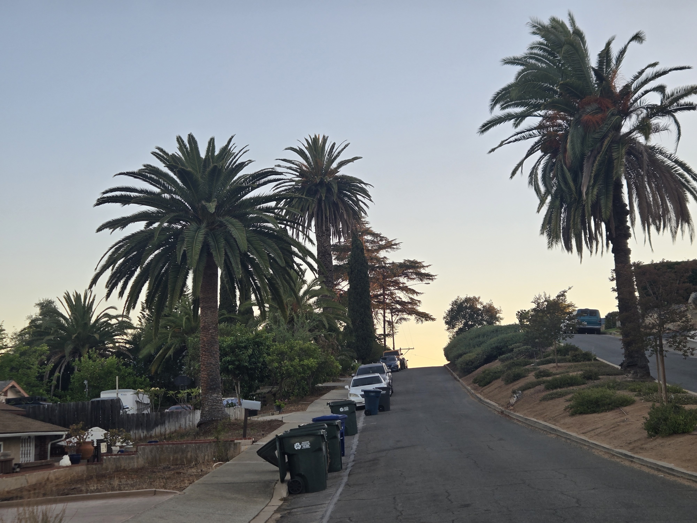
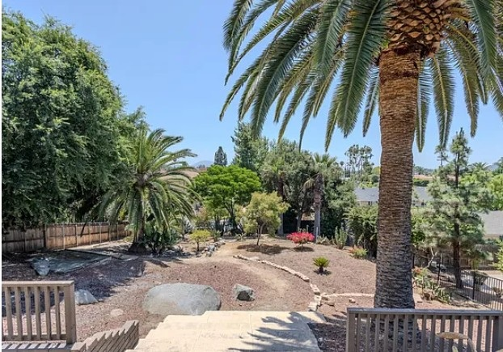
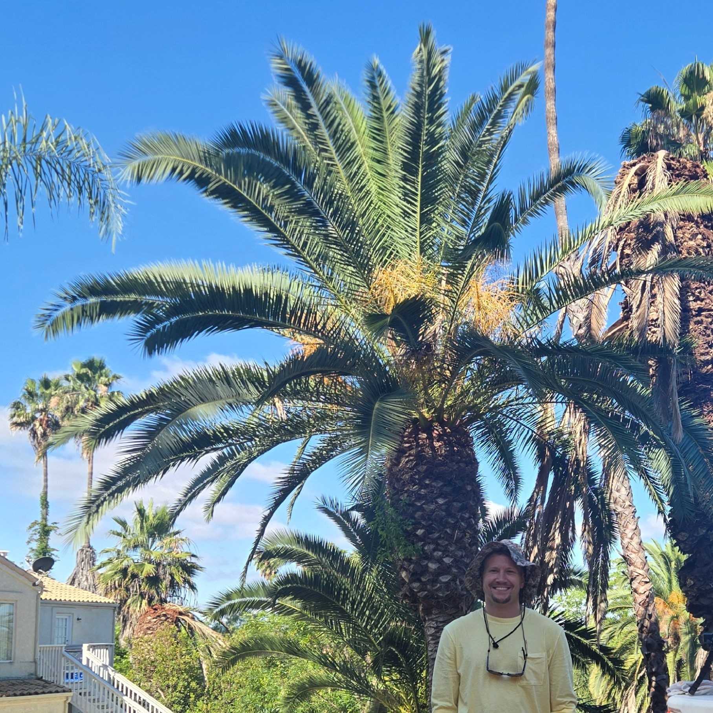

Old Escondido's mature palms are not incidental scenery.
Their broad crowns repeat across older residential lots, apartment grounds, private yards, and street views. Together they give the neighborhood vertical structure, a sense of age, and a visual identity that cannot be replaced quickly once lost.
This is not a complete inventory. It is a field-grounded sample that shows why an inventory and photographic baseline are worth building.

SAPW makes passive observation inadequate
South American palm weevil pressure is real in the local landscape. That does not mean every CIDP is infested. It means waiting for obvious crown failure is not an adequate documentation plan. Dated photographs, repeatable viewpoints, and follow-up observations give owners and civic planners a record of what was present and how it changed.
On my own property, I have captured more than six adult South American palm weevils in connection with my mature CIDP preservation effort. That is an owner/SDPP field observation, not a City-issued diagnosis or a claim about somebody else's palm. It is one reason I treat records as essential rather than optional.

Records matter before the saws arrive
The Las Palmas Palm Journal record, No Reply. Then the Saws., documented visible crown change, attempted notification, removal, and the landscape left behind. It kept observed facts separate from presumed SAPW attribution. That chronology is the point: documentation can remain useful even when a palm is gone.

What a useful Old Escondido record can contain
- Species and owner-confirmed location or privacy-safe area context
- Dated whole-palm, crown, trunk, and site photographs
- Repeat observations from comparable viewpoints
- Owner-reported preservation work and contractor work records
- Documented change, loss, removal, and replacement context
- A clear separation between observation, reported context, and diagnosis


Mature private-property palms still shape the public landscape. A civic record can recognize that contribution without confusing ownership or assigning City authority.
How SDPP can contribute
San Diego Palm Protection can organize photographic baselines, repeat observations, community intake, loss and change records, Palm Journal chronologies, contractor work-record support, and preservation or replacement context. The owner remains the author and decision-maker; the record makes the evidence reviewable.
